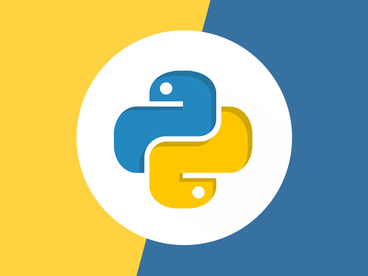

Front-End
It is the visible part of website or web application which is responsible for user experience. The user directly interacts with the front end portion of the web application or website.
HTML
HTML stands for Hyper Text Markup Language. It is used to design the front end portion of web pages using markup language. HTML is the combination of Hypertext and Markup language. Hypertext defines the link between the web pages. The markup language is used to define the text documentation within tag which defines the structure of web pages.
CSS

Cascading Style Sheets, fondly referred to as CSS, is a simply designed language intended to simplify the process of making web pages presentable. CSS allows you to apply styles to web pages. More importantly, CSS enables you to do this independent of the HTML that makes up each web page.
JAVASCRIPT
JavaScript is a famous scripting language used to create the magic on the sites to make the site interactive for the user. It is used to enhancing the functionality of a website to running cool games and web-based software.
Back-End
It refers to the server-side development of web application or website with a primary focus on how the website works. It is responsible for managing the database through queries and APIs by client-side commands. This type of website mainly consists of three parts front end, back end, and database. The back end portion is built by using some libraries, frameworks, and languages which are discussed
PYTHON
>
Python is a programming language that lets you work quickly and integrate systems more efficiently.
PHP
PHP is a server-side scripting language designed specifically for web development. Since, PHP code executed on server side so it is called server side scripting language.
NODE JS
Node.js is an open source and cross-platform runtime environment for executing JavaScript code outside of a browser. You need to remember that NodeJS is not a framework and it's not a programming language. Most of the people are confused and understand it’s a framework or a programming language.
We often use Node.js for building back-end services like APIs like Web App or Mobile App. It’s used in production by large companies such as Paypal, Uber, Netflix, Walmart and so on.
DATA BASE
Database is the collection of inter-related data which helps in efficient retrieval, insertion and deletion of data from database and organizes the data in the form of tables, views, schemas, reports etc.
MY SQL

Structured Query Language is a standard Database language which is used to create, maintain and retrieve the relational database.
MONGO DB
MongoDB,the most popular NoSQL database, is an open source document-oriented database.The term 'NoSQL' means 'non-relational'.
It means that MongoDB isn't based on the table-like relational database structure but provides an altogether different mechanism for storage and retrieval of data.